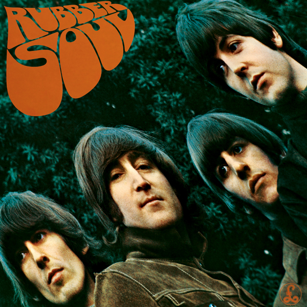
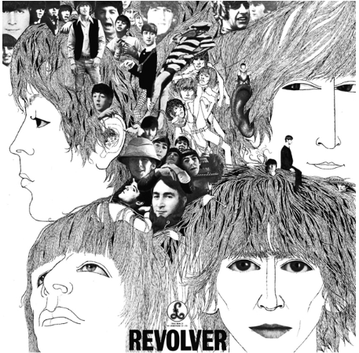

Released in 1965, The Beatles' album "Rubber Soul" is a seminal work that marked a significant shift
in the band's musical direction. With its innovative blend of folk, rock, and pop elements,
the album showcased the group's evolving maturity as songwriters and musicians.
Tracks like "Norwegian Wood," "In My Life," and "Michelle" exemplify the album's introspective
lyricism and intricate melodies, while "Drive My Car" and "Nowhere Man" exhibit a newfound experimental edge.
"Rubber Soul" not only set the stage for the band's groundbreaking experimentation in later
albums but also cemented their status as one of the most influential acts in popular music history.
Its timeless appeal continues to captivate listeners, earning it a place as one of The Beatles' most
enduring and beloved records.

Drive My Car
Norwegian Wood (This Bird Has Flown)
You Won't See Me
Nowhere Man
Think for Yourself
The Word
Michelle
What Goes On
I've Just Seen a Face
Released in 1966, The Beatles' "Revolver" stands as a monumental landmark in the evolution of popular music.
With its groundbreaking experimentation and kaleidoscopic sonic palette, the album defied conventional
boundaries and reshaped the landscape of rock and roll. From the psychedelic whimsy of "Yellow Submarine"
to the introspective melancholy of "Eleanor Rigby," each track on "Revolver" showcases the band's unparalleled
songwriting prowess and innovative studio techniques, masterfully produced by George Martin. Tracks like
"Tomorrow Never Knows" pushed the boundaries of what was sonically possible, featuring pioneering tape loops
and avant-garde textures, while "She Said She Said" and "And Your Bird Can Sing" epitomized The Beatles'
mastery of catchy melodies and intricate harmonies. "Revolver" marked a pivotal moment in the band's career,
cementing their status as musical visionaries and leaving an indelible legacy that continues to inspire
generations of musicians and listeners alike.

Taxman
Eleanor Rigby
I'm Only Sleeping
Love You To
Here, There and Everywhere
Yellow Submarine
She Said She Said
Good Day Sunshine
And Your Bird Can Sing
For No One
Doctor Robert
I Want to Tell You
Got to Get You into My Life
Tomorrow Never Knows
The Beatles' "Sgt. Pepper's Lonely Hearts Club Band," released in 1967, remains one of the
most iconic and influential albums in the history of popular music. Conceptually ambitious and sonically
adventurous, the album represented a bold departure from the band's previous work. With its vivid imagery,
eclectic instrumentation, and innovative production techniques, "Sgt. Pepper" captivated audiences worldwide
and redefined the possibilities of the studio as an instrument. From the exuberant title track to the
psychedelic swirl of "Lucy in the Sky with Diamonds" and the haunting melancholy of "A Day in the Life,"
each song on the album offered a rich tapestry of sound and emotion. "Sgt. Pepper" not only reflected the
spirit of its time but also transcended it, serving as a timeless masterpiece that continues to inspire
artists across genres and generations.
Sgt. Pepper's Lonely Hearts Club Band
With a Little Help from My Friends
Lucy in the Sky with Diamonds
Getting Better
Fixing a Hole
She's Leaving Home
Being for the Benefit of Mr. Kite!
Within You Without You
When I'm Sixty-Four
Lovely Rita
Good Morning Good Morning
Sgt. Pepper's Lonely Hearts Club Band (Reprise)
A Day in the Life
The Beatles' self-titled double album, commonly known as the "White Album," released in 1968,
stands as a sprawling and eclectic masterpiece that showcases the band's vast musical range and creative diversity.
With its stark minimalist cover and expansive tracklist, the album represented a departure from the cohesive
concept of their previous works. From the gentle folk of "Blackbird" to the avant-garde experimentation of
"Revolution 9," and the raw rock energy of "Helter Skelter," the "White Album" traverses a vast musical landscape,
offering a kaleidoscopic journey through the band's collective imagination. Each song on the album is a gem in
its own right, reflecting the individual talents and personalities of John Lennon, Paul McCartney, George Harrison,
and Ringo Starr. Despite its eclectic nature, the "White Album" remains a cohesive and enduring work of art,
beloved by fans and critics alike for its fearless creativity and timeless brilliance.
Back in the U.S.S.R.
Dear Prudence
Glass Onion
Ob-La-Di, Ob-La-Da
Wild Honey Pie
The Continuing Story of Bungalow Bill
While My Guitar Gently Weeps
Happiness Is a Warm Gun
Martha My Dear
I'm So Tired
Blackbird
Piggies
Rocky Raccoon
Don't Pass Me By
Why Don't We Do It in the Road?
I Will
Julia
Birthday
Yer Blues
Mother Nature's Son
Everybody's Got Something to Hide Except Me and My Monkey
Sexy Sadie
Helter Skelter
Long, Long, Long
Revolution 1
Honey Pie
Savoy Truffle
Cry Baby Cry
Revolution 9
Good Night
The Beatles' "Yellow Submarine" album, released in 1969, serves as a whimsical and imaginative
soundtrack to the animated film of the same name. While not strictly a studio album in the traditional sense,
"Yellow Submarine" features a selection of previously released tracks alongside a handful of new songs, including
the titular track and "All Together Now." The album captures the band's playful spirit and showcases their ability
to craft catchy tunes that appeal to audiences of all ages. Songs like "Hey Bulldog" and "It's All Too Much" exemplify
the band's psychedelic leanings, while tracks like "Only a Northern Song" provide a glimpse into George Harrison's
evolving songwriting style. Though perhaps not as groundbreaking as some of their other works, "Yellow Submarine"
remains a charming and essential part of The Beatles' discography, offering a delightful musical journey through
Pepperland and beyond.
Yellow Submarine
Only a Northern Song
All Together Now
Hey Bulldog
It's All Too Much
All You Need Is Love
Pepperland
Sea of Time
Sea of Holes
Sea of Monsters
March of the Meanies
Pepperland Laid Waste
Yellow Submarine in Pepperland
The Beatles' "Abbey Road" album, released in 1969, stands as a crowning achievement in the band's
illustrious career. Recorded during a period of tension within the group, "Abbey Road" nonetheless showcases
The Beatles at the height of their creative powers, delivering a seamless blend of innovative songwriting,
impeccable musicianship, and intricate studio production. From the iconic opening medley of "Come Together"
to the legendary guitar solo in "Something," and the experimental symphonic suite of "I Want You (She's So Heavy),"
each track on the album demonstrates the band's mastery of melody, harmony, and rhythm. The album's side two medley,
seamlessly weaving together several shorter songs, stands as a testament to The Beatles' collaborative spirit and
ability to push the boundaries of traditional song structures. Culminating in the majestic finale of "The End" and
"Her Majesty," "Abbey Road" remains a timeless classic that continues to captivate and inspire listeners, cementing
its place as one of the greatest albums in the history of popular music.
Come Together
Something
Maxwell's Silver Hammer
Oh! Darling
Octopus's Garden
I Want You (She's So Heavy)
Here Comes the Sun
Because
You Never Give Me Your Money
Sun King
Mean Mr. Mustard
Polythene Pam
She Came In Through the Bathroom Window
Golden Slumbers
Carry That Weight
The End
Her Majesty
The Beatles' "Let It Be" album, released in 1970, marked both the end of an era and a poignant farewell from the
legendary band. Recorded during a period of internal strife and creative tension, the album captures The Beatles'
raw and unfiltered energy as they sought to recapture the spontaneity of their early years. From the anthemic title
track to the soulful balladry of "The Long and Winding Road," and the bluesy grit of "Get Back," each song on
"Let It Be" reflects the band's diverse influences and musical evolution. Despite its troubled production history,
the album resonates with a sense of authenticity and emotional depth, showcasing The Beatles' ability to turn
personal turmoil into timeless art. While "Let It Be" may not have the polished sheen of their earlier works,
it remains a testament to the enduring legacy of The Beatles and their unparalleled impact on the world of music.